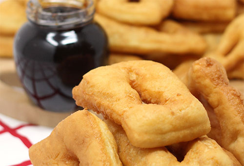

Прженице/завијаче
Потребни састојци за две особе:
- 2 јаја;
- 150ml млека;
- 4-6 парчета старијег хлеба;
- Мало масти или уља;
- Со по укусу.
- Припрема:
- Умутити јаја и додати 150ml млека. Свако парче хлеба умочити у смесу и пећи на тихој ватри 5-10 минута, док
хлеб не добије златно-жуту боју.
Мекике
Потребни састојци:
- 500g брашна тип 400;
- 40g свежег квасца или једна кесица сувог;
- Једно јаје;
- Једна шоља млаке воде;
- Једна шоља млека;
- Једна кашичица соли;
- Уље.
- Припрема:
- У ванглу ставити брашно, квасац и со. Постепено додавати помешану воду и млеко и умесити глатко тесто (мекше него за хлеб). Тесто месити док не почне да се одваја од посуде. Покрити тесто и оставити да одстоји 10-15 минута. После тога поново га измешати и опет оставити да одстоји 15-20 минута. Тесто исећи по жељи и ставити да се пржи у загрејаном уљу. Тесто пржити 3-5 минута са сваке стране. Када су мекике готове ставити их на упијајући папир и служити по жељи.
Гибаница са сиром

Потребни састојци:
- 500g готових кора;
- 400g ситног сира;
- Једна шоља јогурта;
- 3 јаја;
- Једна шоља киселе воде;
- Пола шоље уља;
- Једна кашичица соли.
- Припрема:
- Рерну загрејати на 200oC. За фил помешати јаја, киселу воду, јогурт, уље и со. Поуљити округли плех и на дно ставити једну кору. Ту кору мало попрскати уљем, а затим ставити другу кору, коју такође треба попрскати са мало уља, и преко ње ставити шаку ситног сира. Овај редослед понављати све док се материјал не потроши (значи на почетку и крају иду по две коре, а у средини иде кора-сир-кора-сир). Тако припремљену гибаницу исећи на 8 једнаких делова и прелити филом. Гибаницу са сиром пећи 30 минута и послужити по жељи.